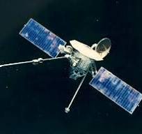

Mariner 10 (1973-1975)
The first spacecraft to fly by Mercury, Mariner 10 provided the first close-up images of the planet.
 mariner MissionMESSENGER (2004-2015)
MESSENGER orbited Mercury, mapping its surface and analyzing its composition and magnetic field.
 NASA MESSENGER Mission
NASA MESSENGER Mission
BepiColombo (2018-Present)
BepiColombo, a joint mission by ESA and JAXA, is currently en route to study Mercury’s atmosphere and magnetosphere.
 ESA BepiColombo Mission
ESA BepiColombo Mission
Mercury-P (Proposed)
Roscosmos's proposed mission aims to land on Mercury and study its surface and environment in greater detail.
 Roscosmos Mercury-P Mission
Roscosmos Mercury-P Mission
ESA M5 Mission Proposals
The European Space Agency is considering future missions to Mercury, focusing on detailed studies of the planet’s structure.
 ESA M5 Mission Proposals
ESA M5 Mission Proposals